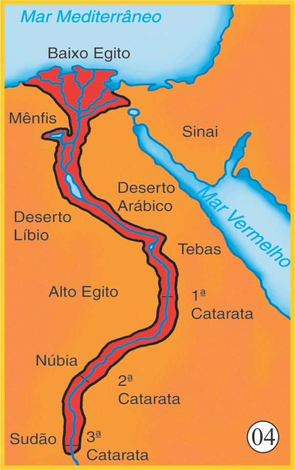
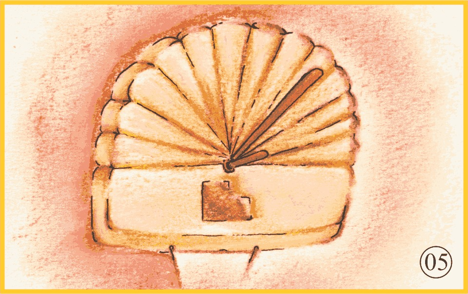
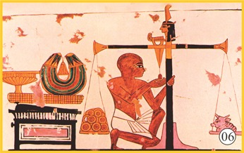
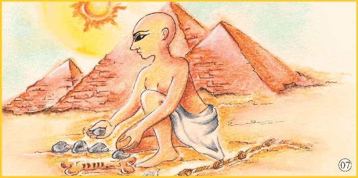

Para se ter uma visão do futuro, necessitamos de um profundo
conhecimento do passado e uma clareza dos fatos do presente. Nada
melhor que sua própria história para compreendermos que a
matemática surge como uma ferramenta do raciocínio no momento em
que o homem sente necessidade.
"
/>
Na era Paleolítica, o homem produzia seus instrumentos, caçava e
colhia para seu próprio sustento. O homem usava a pedra para
marcar ossos, fazia nós em cordas ou usava os próprios dedos para
determinar quantidades.
"
/>
O homem observou que um conjunto com três animais e um conjunto
com três árvores possuem uma propriedade comum: a quantidade.Essa
era a ideia de número.Dos números naturais.

"
/>
Das antigas civilizações, podemos citar os egípcios que viveram na
margem do Rio Nilo há 5 000 anos.

"
/>
Com o aumento da população, surgiu a necessidade de plantar e
colher para sustentação de comunidades que o homem criou para
facilitar sua sobrevivência. O homem já dominava o fogo e a
linguagem.

"
/>
Os egípcios inventaram o relógio de sol e a balança.

"
/>
Criaram também o calendário de 365 dias. Construíram grandes
monumentos e grandes cidades.
"
/>
Heródoto, o primeiro historiador da Grécia Antiga, afirmava que os
egípcios frequentemente tinham que remarcar suas terras
prejudicadas pelas inundações do Rio Nilo. Para isso, eram usadas
algumas técnicas primitivas de matemática.
"
/>
Através da divisão das terras, surgiu a ideia de número
fracionário. E através dessa medida da terra, surgiu a Geometria.
"
/>
Os faraós ordenavam que as terras fossem divididas
proporcionalmente à quantidade de membros da família em condições
de trabalho. Os faraós acreditavam, há milênios, que se não
houvesse terra ociosa, nem mão de obra ociosa, haveria fartura
para todos. Os egípcios produziram um sistema de numeração
interessante. O sistema não é posicional, ou seja, a ordem dos
símbolos não interfere no valor do número. A matemática dos
egípcios era prática. Solucionava problemas do dia a dia.
Esse papiro contém as soluções de problemas práticos envolvendo
geometria e trigonometria que os egípcios costumavam resolver.
Hoje ele se encontra no British Museum, em Londres, e é conhecido
como Papiro de Rhind. Quase tudo que sabemos sobre a matemática
dos egípcios ficou registrado no Papiro Ahmes.
Paulo Roberto da Silva
Mestrando em Ensino da Matemática pela PUC Minas
Pós-graduado em Educação Tecnológica pelo CEFET-MG
Pós-graduado em Temas Filosóficos pela FAFICH-UFMG
Pós-graduado em Matemática Superior pela PUC Minas
Licenciado em Matemática pela FAFI-BH (atual UNI-BH)
Mensagem do professsor
Caro (a) aluno (a), é com muito prazer que eu apresento a versão
virtual do álbum de figurinhas História da Matemática. Há mais de
20 anos lecionando Matemática para jovens e adultos, eu sempre
percebi muita dificuldade por parte da maioria em interpretar
problemas e desenvolver cálculos matemáticos. Por isso criei um
material que possa motivar os estudantes a praticar os exercícios
e estudar de forma mais aprofundada os prazeres da Matemática. Eu
espero que você goste. Bons estudos! Um abraço do Paulinho.